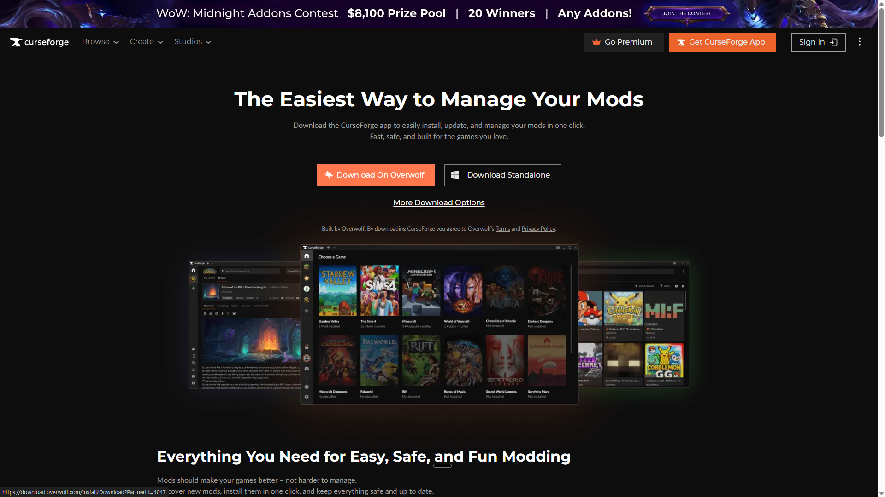
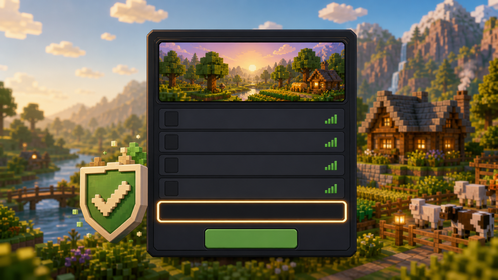
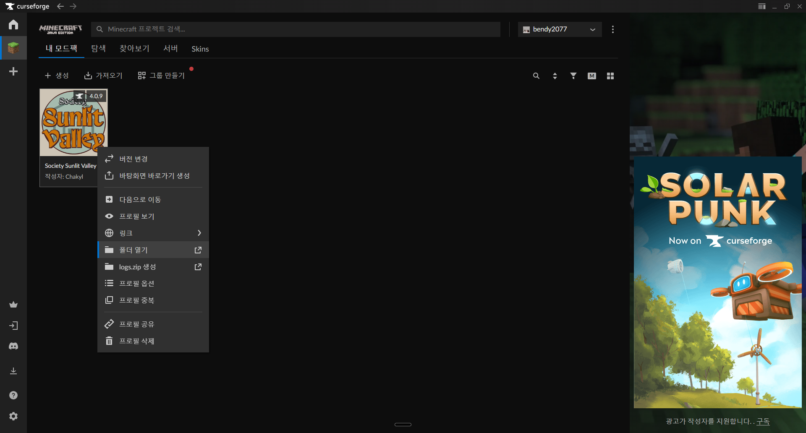
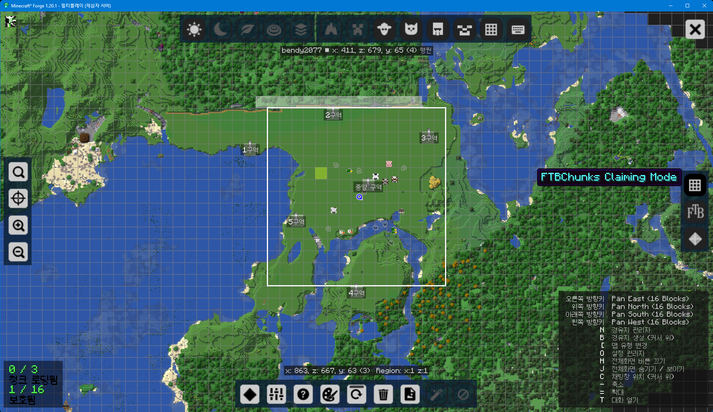
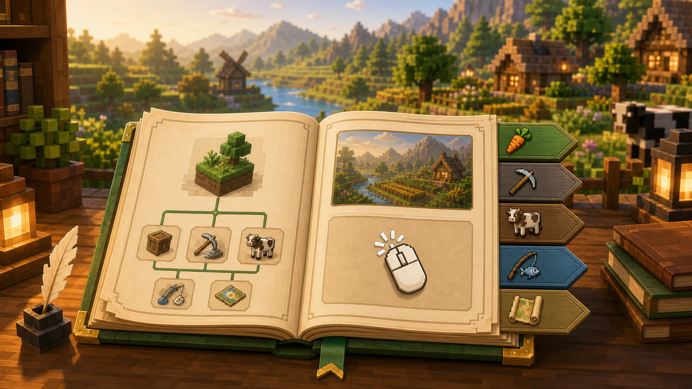
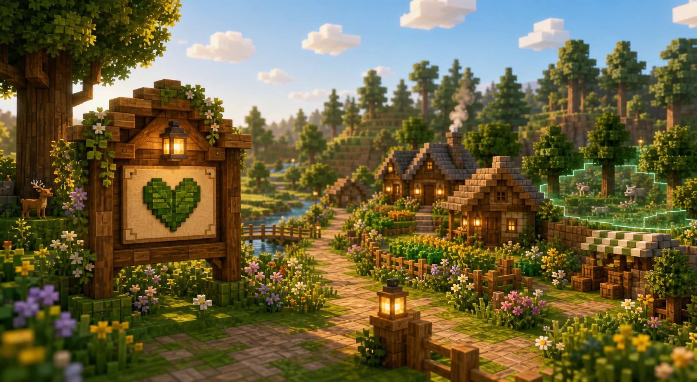

설치
CurseForge 앱에서 모드팩 설치하기
모드 파일을 직접 넣지 말고 앱에서 검색해서 설치하세요. 친구들도 같은 방식으로 설치하면 됩니다.

-
CurseForge 앱 설치
CurseForge 공식 앱을 받고 실행합니다.
-
Minecraft 선택
처음 실행하면 게임 목록이 나옵니다. 여기서 Minecraft를 누릅니다.
-
Browse 또는 Search 열기
상단 검색창이나 Browse Modpacks 화면에서 모드팩을 검색합니다.
-
검색어 입력
Society: Sunlit Valley를 검색하고, 같은 이름의 모드팩을 고른 뒤 Install을 누릅니다.
-
Play 실행
My Modpacks에서 설치된 프로필을 열고 Play를 누릅니다. Minecraft Launcher가 뜨면 다시 Play를 누릅니다.
램 설정
프로필 설정에서 Allocated Memory를 약 8192 MB로 맞추는 것을 추천합니다.
보이스 모드
보이스 모드는 왼쪽 보이스 모드 탭을 보고 설치 위치까지 확인하세요.
접속
화이트리스트 등록 후 서버 들어가기
화이트리스트에 등록된 마인크래프트 닉네임만 서버에 들어올 수 있습니다.

서버 주소
34.47.112.1:25565
-
닉네임 보내기
디스코드 #화이트리스트 채널에 자기 마인크래프트 닉네임을 정확히 적습니다.
-
관리자 등록 기다리기
등록 전에는 접속해도 “white-listed” 관련 문구가 뜨면서 들어갈 수 없습니다.
-
Multiplayer 열기
게임에서 Multiplayer → Add Server 또는 Direct Connection을 누릅니다.
-
주소 입력
34.47.112.1:25565를 입력하고 접속합니다.
서버 기본 약속
다른 사람 건축물과 청크는 건드리지 말고, 문제가 생기면 좌표와 상황을 같이 알려주세요.
접속이 안 될 때
닉네임 철자, 모드팩 버전, 화이트리스트 등록 여부를 먼저 확인합니다.
보이스 모드
Simple Voice Chat 설치와 설정
이 서버는 가까이 있는 사람끼리 목소리가 들리는 보이스 모드를 사용합니다.

-
모드 확인
CurseForge 프로필에서 Simple Voice Chat이 설치되어 있는지 확인합니다.
-
없으면 추가
프로필을 누르고 Add More Content → Simple Voice Chat 검색 → 설치합니다.
-
수동 다운로드 위치
브라우저에서 직접 받은 보이스 모드 파일은 보통 Windows의 다운로드 폴더에
.jar 파일로 저장됩니다.
-
Sunlit Valley 폴더 열기
CurseForge에서 Sunlit Valley 프로필의 더보기 메뉴를 누르고 Open Folder를 누르면 모드팩 폴더가 열립니다.
-
mods 폴더에 넣기
열린 폴더 안의 mods 폴더에 Simple Voice Chat
.jar 파일을 넣고 게임을 다시 실행합니다.
-
게임 안에서 V 키
서버에 들어간 뒤 V를 누르면 보이스 모드 메뉴가 열립니다.
-
입출력 장치 선택
설정에서 실제 마이크와 헤드셋/이어폰을 고르고, 마이크 테스트를 해봅니다.
추천
처음에는 이어폰 또는 헤드셋을 쓰고, 잡음이 있으면 Push To Talk로 바꿔 테스트하세요.
안 들릴 때
Windows 입력 장치, 게임 안 V 메뉴, 마이크 음소거 상태를 차례대로 확인합니다.
앱에서 설치했다면
CurseForge의 Add More Content로 설치한 경우에는 자동으로 mods 폴더에 들어가므로 직접 옮길 필요가 없습니다.
지도
J 키 지도, 청크 보호, 강제 로딩
집이나 중요한 농장 주변은 FTB Chunks로 보호하세요. 서버 설정은 개인당 보호 16청크, 강제 로딩 3청크입니다.

마을 터는 신중하게 고르세요.
이 모드팩에는 청사진 시스템이 있어서 이미 지어진 큰 건물과 여러 종류의 건물을 빠르게 세울 수 있습니다.
NPC가 사는 마을처럼 크게 확장될 수 있으니, 마을을 섣불리 짓기보다 오래 플레이할 땅을 먼저 고르는 것이 좋습니다.
-
지도 열기
J 키를 누르면 큰 지도가 열립니다. 안 열리면 Controls에서 Map 또는 FTB Chunks 키를 확인하세요.
-
청크 보호 화면 열기
지도 오른쪽에 있는 격자무늬 아이콘을 누르면 청크 보호 모드로 들어갑니다.
-
청크 보호하기
보호할 칸을 클릭합니다. 여러 칸은 드래그해서 선택합니다.
-
보호 해제하기
이미 보호한 칸은 우클릭하거나 다시 선택해서 해제합니다.
-
강제 로딩 켜기
보호한 청크에서 Shift를 누른 채 클릭하면 강제 로딩을 켤 수 있습니다.
강제 로딩이란?
내가 접속해 있지 않거나 멀리 있어도 그 청크의 농장이나 기계가 계속 돌아가게 하는 기능입니다.
왜 3개만?
강제 로딩이 많으면 서버가 계속 일을 해야 해서 느려질 수 있습니다. 꼭 필요한 곳에만 켜세요.
보호와 강제 로딩은 다름
보호는 남이 못 건드리게 하는 것이고, 강제 로딩은 그 지역을 계속 작동시키는 것입니다.
퀘스트
퀘스트북에서 메뉴 찾기
처음에는 퀘스트북 안의 사이드 메뉴가 잘 안 보일 수 있습니다. 오른쪽 클릭과 옆 화살표를 기억하세요.

-
퀘스트북 열기
인벤토리에서 퀘스트북을 들고 우클릭하면 퀘스트 화면이 열립니다.
-
사이드 화살표 보기
퀘스트북 화면 좌측에 작은 화살표 메뉴가 있습니다. 이걸 눌러야 다른 메뉴들이 보입니다.
-
카테고리 이동
농사, 동물, 낚시, 광산, 탐험 같은 여러 진행 메뉴를 옆 메뉴에서 찾을 수 있습니다.
-
막히면 퀘스트부터 확인
무엇을 해야 할지 모르겠으면 퀘스트북에서 현재 열려 있는 목표를 먼저 확인하세요.
튜토리얼 필수
처음에는 튜토리얼부터 반드시 진행하세요. 튜토리얼을 따라가야 이후 진행이 훨씬 원활합니다.
처음 목표
초반에는 농사와 기본 생활 퀘스트를 따라가면 자연스럽게 다음 콘텐츠가 열립니다.
보상 받기
완료한 퀘스트는 보상을 직접 눌러 받아야 할 수 있습니다.
규칙
힐링 서버 기본 약속
벤타듀 밸리는 경쟁보다 천천히 마을을 꾸미고 생활하는 힐링 서버입니다.

-
힐링 서버
이 서버는 빠른 경쟁이나 파괴 플레이보다 농사, 건축, 탐험을 천천히 즐기는 서버입니다.
-
야생 구역
야생 구역에는 마을을 건설하지 않습니다. 야생은 채집, 탐험, 광질을 위한 공간으로 사용합니다.
-
마을 구역 건축
마을 구역에는 시야를 심하게 가리는 초고층 건물, 흉측한 구조물, 주변 분위기와 맞지 않는 건축물을 짓지 않습니다.
-
식물과 장식
식물, 밭, 장식은 자유롭게 두되, 다른 사람의 길이나 건축을 막지 않게 배치합니다.
-
운영자 활동
이미 완성된 모드팩을 함께 즐기는 서버라서 운영자의 별도 업데이트나 버그 수정 활동은 거의 없습니다.
문제 신고
문제가 생기면 좌표, 상황, 스크린샷을 같이 공유하면 확인하기 쉽습니다.
다른 사람 구역
보호가 안 되어 있어도 다른 사람 건축물이나 청크는 건드리지 않습니다.